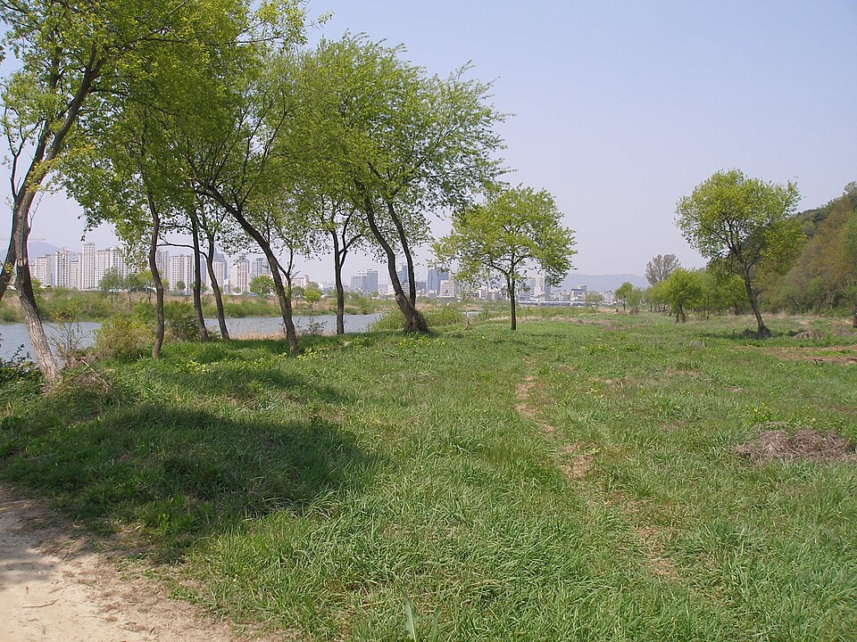

유성구 검정고시 — 학교를 그만둔 뒤, 무엇부터 하면 되나

학교를 그만두고 나면 가장 먼저 찾아오는 건 해방감이 아니라 막막함인 경우가 많습니다. 시간표가 사라지고 나를 챙겨 주던 구조가 없어지니까요. 유성구 검정고시를 준비하는 학생들이 처음 몇 달에 무엇을 하느냐가, 그 뒤 과정을 꽤 많이 가릅니다.
먼저 잡을 것은 공부가 아니라 하루 리듬입니다
자퇴 후에 성적이 안 나오는 이유는 대개 머리가 나빠서가 아니라 낮과 밤이 뒤집혀서입니다. 새벽에 자고 오후에 일어나면 공부 시간이 없어지는 게 아니라, 집중이 되는 시간대가 통째로 사라집니다.
첫 2주는 목표를 딱 하나만 두셔도 됩니다. 매일 같은 시각에 일어나기. 몇 시간 공부했는지보다 이게 먼저입니다. 그리고 공부하는 장소를 집 안에서 한 곳으로 정해 두세요. 책상에 앉는 행동 자체가 신호가 되어야 시작이 쉬워집니다.
과목은 한꺼번에 말고 순서대로
- 쌓이는 과목 먼저 — 수학과 영어는 앞이 비면 뒤가 안 됩니다. 시간이 걸리니까 일찍 시작합니다.
- 암기 비중이 큰 과목은 뒤로 — 사회·한국사처럼 외워서 채우는 과목은 시험에 가까울수록 효율이 좋습니다.
- 기출로 현재 위치부터 확인 — 지금 몇 점인지 모르고 세운 계획은 대체로 안 지켜집니다. 한 회분만 풀어 봐도 어디가 비었는지 보입니다.
검정고시는 전 과목 평균 60점 이상이면 합격이고, 60점을 넘긴 과목은 과목 합격으로 남습니다. 전 과목을 한 번에 끝내야 한다는 부담을 내려놓고, 확실한 과목부터 하나씩 걷어내면 됩니다.
시험이 끝이 아니라는 걸 먼저 알고 시작하세요
고졸 검정고시에 합격하면 고등학교 졸업자와 같은 학력으로 인정받습니다. 대학에 가려면 수시에서는 검정고시 성적이 학교생활기록부를 대신하는 전형이 있고, 정시에서는 수능으로 지원합니다. 다만 전형 방법과 반영 기준은 대학·모집단위마다 다르므로 지원하려는 대학의 모집요강을 직접 확인해야 합니다. 여기서는 구체적인 커트라인을 말씀드리지 않겠습니다 — 학교마다 달라서, 일반적인 숫자를 믿고 준비하면 오히려 손해입니다.
중요한 건 방향입니다. 대학을 생각하고 있다면 합격만이 목표가 아니라 점수도 목표가 되고, 취업이나 자격증이 목표라면 합격선을 빠르게 넘기는 쪽이 낫습니다. 목표에 따라 공부 방법이 달라지니 시작할 때 한 번 정하고 가는 게 좋습니다.
유성구에서 이렇게 함께합니다
저희는 1:1 맞춤 과외라 진도를 학생에게 맞춥니다. 같은 학년에서 그만뒀어도 어디까지 남아 있는지는 사람마다 완전히 달라서, 첫 수업에서 확인하고 출발점을 잡습니다. 혼자 하면 흐트러지기 쉬운 시기라 주 단위로 확인하는 사람이 있는 것만으로도 차이가 큽니다. 유성구와 인근 지역은 방문 수업이 가능하고, 화상(줌) 수업으로 집에서 진행할 수도 있습니다.